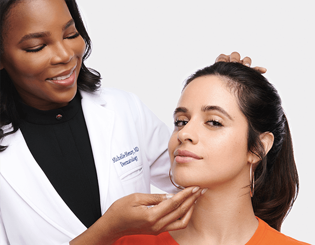
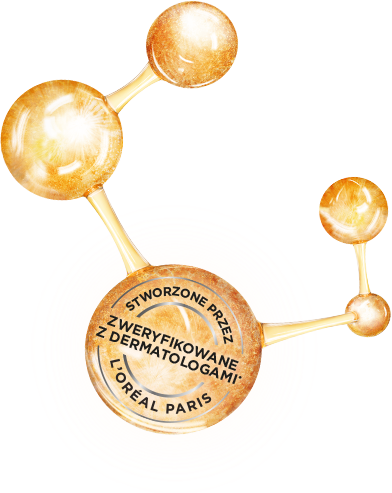
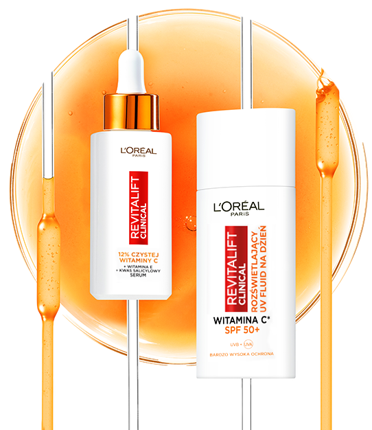
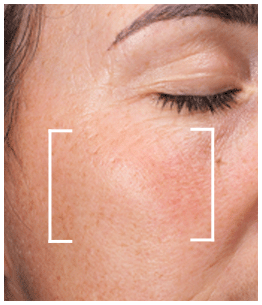
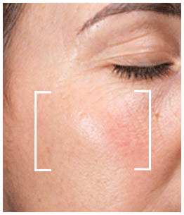
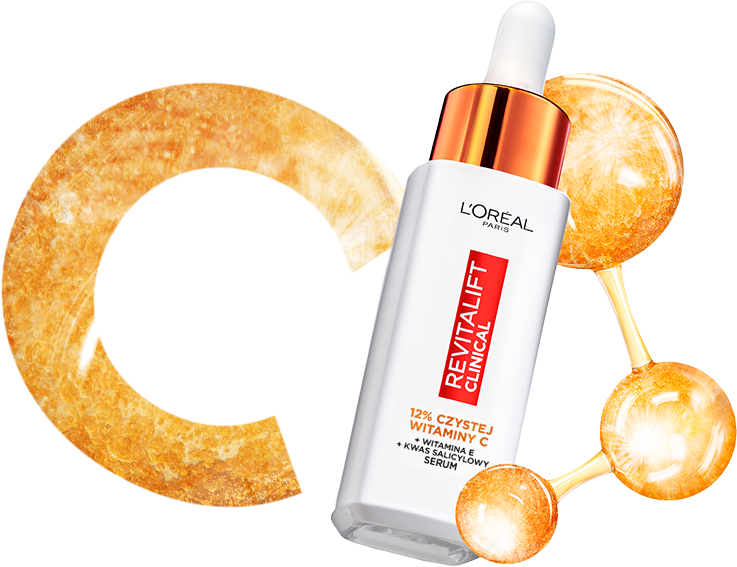

Różnica tkwi
w nauce

Twoja
poranna rutyna
Codziennie
Cały rok

krok 1
rozświetla

serum
12% czystej
witaminy c
krok 2
chroni

ultralekki
UV FLUID
spf 50+

przed***

po***
4x
bardziej
rozświetlona
skóra**

serum
12% czystej
witaminy c
+ witamina E
+ kwas salicylowy
[ koloryt - pory - zmarszczki ]
pomaga zwalczyć pierwsze oznaki
starzenia się skóry
2x
bardziej rozświetlona skóra****
bardziej wyrównany koloryt****
mniej widoczne pory****
mniej drobnych linii****